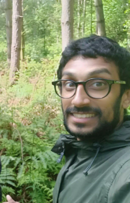

BHAVEET WALKS 1000KM

We all have mental health, some of us have mental ill health. The coronavirus pandemic has caused an increase in the number of people experiencing mental ill health, as well as exacerbating symptoms for people with pre-existing conditions. This year I have set myself the challenge of walking 1000KM split across ten different 100KM walks, raising funds for ten charities that support those experiencing or supporting someone with mental ill health. I have set an ambitious target of £600 for each of the ten charities, with the aim of raising at least £6,000 in total.
Please dig deep, donate, and more importantly, help breakdown the stigma. If you do have conversations around mental ill health, think about using SHUSH: Show you care, Have patience, Use open questions, Say it back & Have courage. Together we can build a society that openly talks about depression, anxiety, bipolar, OCD and other forms of mental ill health instead of maintaining the status quo in which we still shy away and don’t deal with mental ill health issues well.
You can read more about my story and why I am fundraising on my justgiving pages.
Total raised to date: £5,002

Walk Starts: Richmond, London
Walk Ends: Brighton Racecourse, Brighton
Sport in Mind is an independent multi-award winning mental health charity (unaffiliated to Mind and not part of the local Mind network) that was formed in Reading, Berkshire in 2010 with a simple mission: "To improve the lives of people experiencing mental health problems through sport and physical activity". Sport in Mind are the UK’s leading mental health sports charity and deliver physical activity (sport, walking, dance and movement, gardening and exercise sessions) projects in partnership with the amazing NHS in order to aid recovery, promote mental wellbeing, improve physical health, combat social isolation and empower people to move their lives forward in a positive direction.
See more details about Sport in Mind here.

Walk Starts: Bakewell, Derbyshire
Walk Ends: Bakewell, Derbyshire
SANE is a UK-wide charity working to improve quality of life for people affected by mental illness. SANE has three main objectives linked to our aims and outcomes: (1) To raise awareness and combat stigma about mental illness, educating and fighting to improve mental health services. (2) To provide care and emotional support for people with mental health problems, their families and carers as well as information for other organisations and the public. (3) To promote and host research into the causes and more effective treatments of mental illness such as schizophrenia and depression and the psychological and social impact of mental illness. SANE offers emotional support and information to anyone affected by mental health problems through our helpline, Textcare and our online Support Forum where people share their feelings and experiences.
See more details about SANE here.

Walk Starts: Cowes, Isle Of Wight
Walk Ends: Cowes, Isle Of Wight
Music for My Mind is an innovative start-up charity aiming to improve the well-being of people living with dementia (over 850,000 in the UK alone) and their families by creating, and making widely available, personalised music. We want to enable universal adoption of personalised music as an affordable therapy for people living with dementia (e.g. as an alternative to drug treatments, to reduce agitation or combat depression) and others affected by it (family, friends and carers).
See more details about Music for my Mind here.

Walk Starts: Nidderdale Showground, Harrogate
Walk Ends: Nidderdale Showground, Harrogate
We give people ways to cope and the skills to be there for others. We want to encourage, promote and celebrate those moments of connection between people that can protect and even save lives. To do this, we're working in schools, prisons, workplaces and communities, and in partnership with organisations like Network Rail.
See more details about SAMARITANS here.
Walk Starts: Minehead, Somerset
Walk Ends: Dawlish, Devon
The Campaign Against Living Miserably (CALM) is leading a movement against suicide. Every week 125 people in the UK take their own lives. And 75% of all UK suicides are male. CALM exists to change this. Anyone can hit crisis point. We run a free and confidential helpline and webchat – 7 hours a day, 7 days a week for anyone who needs to talk about life’s problems. We support those bereaved by suicide, through the Support After Suicide Partnership (SASP).
See more details about CALM here.

Walk Starts: Eastbourne
Walk Ends: Arudndel, Sussex
Beat is the UK’s eating disorder charity. Founded in 1989 as the Eating Disorders Association, our mission is to end the pain and suffering caused by eating disorders. Eating disorders are serious mental illnesses that ruin and, too often, take lives.
Around 1.25 million people in the UK suffer from these illnesses, many in secret. They are of all ages, genders and backgrounds – eating disorders do not discriminate. Eating disorders include bulimia, binge eating disorder, avoidant/restrictive food intake disorder (ARFID), other specified feeding or eating disorder (OSFED), and anorexia, which tragically has the highest mortality rate of any mental illness, though all eating disorders can be deadly. While this is the worst-case scenario, there are many ways in which eating disorders severely affect the quality of life of both those suffering and those who care about them. They steal childhoods, devastate relationships and pull families apart. But, with the right treatment and support, recovery is possible.
See more details about BEAT here.

Walk Starts: Bishops Park, London
Walk Ends: Henley - on - Thames
PAPYRUS has a vision for a society which speaks openly about suicide and has the resources to help young people who may have suicidal thoughts. We exist to reduce the number of young people who take their own lives by shattering the stigma around suicide and equipping young people and their communities with the skills to recognise and respond to suicidal behaviour.
See more details about PAPYRUS here.
Donation Target has been met for these walks

Walk Starts: Corfe Castle, Dorset
Walk Ends: Birdport, Dorset
OCD Action provide support and information to anybody affected by OCD, work to raise awareness of the disorder amongst the public and frontline healthcare workers, and strive to secure a better deal for people with OCD. OCD Action is recognised as a strong voice for people with OCD, a vital source of help and the Charity that makes a real and lasting difference to anyone affected by OCD
See more details about OCD Action here.

Walk Starts: Kendal, Lake District
Walk Ends: Kendal, Lake District
We are leading the movement to make sure every young person gets the mental health support they need, when they need it, no matter what. It takes courage to ask for help. But for many young people who do, the support they need just isn’t there. In the UK today, an estimated five children in every classroom has a mental health problem. A quarter of 17-year-old girls have self-harmed in the last year, while suicide remains the single biggest killer of boys and young men. But things can get better. We provide young people with tools to look after their mental health. We empower adults to be the best support they can be to the young people in their lives. And we give young people the space and confidence to get their voices heard and change the world we live in.
See more details about YOUNGMINDS here.

Walk Starts: Cirencester, Gloucestershire
Walk Ends: Cirencester, Gloucestershire
We provide advice and support to empower anyone experiencing a mental health problem. We campaign to improve services, raise awareness and promote understanding. We won't give up until everyone experiencing a mental health problem gets support and respect.
See more details about MIND here.